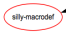
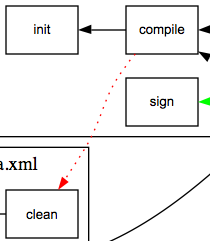

Legend
Where is the legend? What do the shapes and colors mean?
The package I’m using to actually create the graphs, GraphViz, has some limitations. One of them is that there’s really no way to easily create a legend. So, here’s a legend.
- Square boxes represent targets:

- Hexagons are taskdefs:

- Ovals are macrodefs: 
- Solid black lines are depends calls on other targets:

- Dotted red lines are ant calls on targets: 
- Dotted green lines are antcall calls on targets: